Automata Theory
Table of Contents
- 1. DONE Finite Automata
- 2. IN-PROGRESS Regular Expressions and Properties of Regular Languages
- 2.1. DONE Regular expressions
- 2.2. DONE Regular expressions in the real world
- 2.3. DONE Regular-Expression Homework
- 2.4. TODO Decision algorithms for regular languages
- 2.5. TODO Closure properties of regular languages
- 2.6. TODO Properties-of-Regular-Languages Homework
- 2.7. TODO Challenge Problems 2
- 2.8. TODO Problem Session 2
Automata Theory on Lagunita
1 DONE Finite Automata
1.1 DONE Course outline and motivation
Automata is ranked second after database for optional courses in a Stanford survey of grads 5 years out. 3X the score for AI.
- Regular expressions are used in many systems.
- UNIX a.*b.
- DTD describe XML tags with a RE format like
person(name, addr, child*).
- Finite automata model protocols, electronic circuits.
- Context-free grammars are used to describe the syntax of
essentially every programming language.
- Not to forget their important role in describing natural languages.
- And DTD taken as a whole, are really CFGs.
- When developing solutions to real problems, we often confront the
limitations of what software can do.
- Undecidable things - no program whatever can do it.
- Intractable things - there are programs, but no fast programs.
- Automata theory gives you the tools.
Other Good Stuff
- We’ll learn how to deal formally with discrete systems.
- Proofs: You never really prove a program correct, but you need to be thinking of why a tricky technique really works.
- We’ll gain experience with abstract models and constructions.
- Models layered software architectures.
Course Outline
- Regular Languages and their descriptors:
- Finite automata, nondeterministic finite automata, regular expressions.
- Algorithms to decide questions about regular languages, e.g., is it empty?
- Closure properties of regular languages.
- Context-free languages and their descriptors:
- Context-free grammars, pushdown automata.
- Decision and closure properties.
- Recursive and recursively enumerable languages.
- Turing machines, decidability of problems.
- The limit of what can be computed.
- Intractable problems.
- Problems that (appear to) require exponential time.
- NP-completeness and beyond.
1.2 DONE Informal introduction to finite automata
What is a Finite Automaton?
- A formal system.
- Remembers only a finite amount of information.
- Information represented by its state.
- State changes in response to inputs.
- Rules that tell how the state changes in response to inputs are called transitions.
Tennis
- Match = 3-5 sets.
- Set = 6 or more games.
Scoring a Game
- One person serves throughout.
- To win, you must score at least 4 points.
- You also must win by at least 2 points.
- Inputs are s = “server wins point” and o = “opponent wins point.”

Figure 1: The automaton for the game of tennis
Acceptance of Inputs
- Given a sequence of inputs (input string), start in the start state and follow the transition from each symbol in turn.
- Input is accepted if you wind up in a final (accepting) state after all inputs have been read.
Language of an Automaton
- The set of strings accepted by an automaton A is the language of A.
- Denoted L(A).
- Different sets of final states → different languages.
- Example: As designed, L(Tennis) = strings that determines the winner.
1.3 DONE Deterministic Finite Automata
Alphabets
- An alphabet is any finite set of symbols.
- Examples:
- ASCII, Unicode,
- {0, 1} (binary alphabet),
- {a, b, c}, {s, o},
- set of signals used by a protocol.
Strings
- A string over an alphabet Σ is a list, each element of
which is a member of Σ.
- Strings shown with no commas or quotes, e.g., abc or 01101.
- Σ* = set of all strings over alphabet Σ.
- The length of a string is its number of positions.
- ε stands for the empty string (string of length 0).
Example: Strings
- {0, 1}* = {ε, 0, 1, 00, 01, 10, 11, 000, 001, …}
- Subtlety: 0 as a string, 0 as a symbol look the same.
- Context determines the type.
Languages
- A language is a subset of Σ* for some alphabet Σ.
- Example: The set of string of 0s and 1s with no two consecutive 1s.
- L = {ε, 0, 1, 00, 01, 10, 000, 001, 010, 100, 101, 0000,
0001, 0010, 0100, 0101, 1000, 1001, 1010, …}
- Fibonacci sequence hides here.
Deterministic Finite Automata
- A formalism for defining languages,
consisting of:
- A finite set of states (Q, typically).
- An input alphabet (Σ, typically).
- A transition function (δ, typically).
- A start state (q0, in Q, typically).
- A set of final states (F ⊂ Q, typically).
- “Final” and “accepting” are synonyms.
The Transition Function
- Takes two arguments: a state and an input symbol.
- δ(q, a) = the state that the DFA goes to when it is in state q and input a is received.
- Note: always a next state - add a dead state if no transition
Graph Representation of DFAs
- Nodes = states.
- Arcs represent transition function.
- Arc from state p to state q labeled by all those input symbols that have transitions from p to q.
- Arrow labeled “Start” to the start state.
- Final states indicated by double circles.

Figure 2: Recognizing strings ending in “ing”

Figure 3: Protocol for sending data
A: String so far has no 11, does not end in 1. B: String so far has no 11, but ends in a single 1. C: Consecutive 1s have been seen.

Figure 4: Strings without two consecutive 1s
Alternative Representation: Transition Table
| 0 | 1 | ||
|---|---|---|---|
| * | A | A | B |
| * | B | A | C |
| C | C | C |
Convention: Strings and Symbols
- … w, x, y, z are strings.
- a, b, c, … are single input symbols.
Extended Transition Function
- We describe the effect of a string of inputs on a DFA by extending δ to a state and a string.
- Intuition: Extended δ is computed for state q and inputs a1a2…an by following a path in the transition graph, starting at q and selecting the arcs with labels a1, a2, …, an in turn.
Inductive Definition of Extended δ
- Induction on length of string.
- Basis: δ(q, ε) = q
- Induction: δ(q, wa) = δ(δ(q, w), a)
- Remember: w is a string; a is an input symbol, by convention.
Delta-hat
- We don’t distinguish between the given delta and the extended delta or delta-hat.
- The reason: \(\hat\delta(q, a) = \delta(\hat\delta(q, \epsilon), a) = \delta(q, a)\)
Language of a DFA
- Automata of all kinds define languages.
- If A is an automaton, L(A) is its language.
- For a DFA A, L(A) is the set of strings labeling paths from the start state to a final state.
- Formally: L(A) = the set of strings w such that δ(q0, w) is in F.
Example: String in a Language
- String 101 is in the language of the string DFA.
- The language of this DFA is:
- {w | w is in {0, 1}* and w does not have two consecutive 1s}
Proofs of Set Equivalence
- Often, we need to prove that two descriptions of sets are in fact the same set
- Here, one set is “the language of this DFA,” and the other is “the set of strings of 0s and 1s with no consecutive 1s.”
Regular Languages
- A language L is regular if it is the language accepted by some DFA.
- Note: the DFA must accept only the strings in L, no others.
- Some languages are not regular.
- Intuitively, regular languages “cannot count” to arbitrarily high integers.
Example: A Nonregular Language
- L1 = {0n1n | n ≥ 1}
- Note: ai is conventional for i a’s.
- Thus, 04 = 0000, e.g.
- Read: The set of strings consisting of n 0s followed by n 1s, such that n is at least 1.
- Thus, L1 = {01, 0011, 000111, …}
Another Example
- L2 = {w | w in {(, )}* and w is balanced}
- Balanced parentheses are those sequences of parentheses that can appear in an arithmetic expression.
- E.g., (), ()(), (()), (()()), …
But Many Languages are Regular
- They appear in many contexts and have many useful properties.
- Example: the strings that represent floating point numbers in your favorite language is a regular language.
Example: A Regular Language
- L3 = {w | w in {0, 1}* and w, viewed as a binary integer, is divisible by 23}
- The DFA:
- 23 states, named 0, 1, …, 22.
- Correspond to the 23 remainders of an integer divided by 23.
- Start and only final state is 0.
- If string w represents integer i, then assume δ(0, w) = i % 23.
- Then w0 represents integer 2i, so we want δ(i%23, 0) = (2i) % 23.
- Similarly, w1 represents 2i+1, so we want δ(i%23, 1) =
(2i+1) % 23.
- Just let δ(q, a) = (2q+a) % 23.
- Example: δ(15, 0) = 30%23 = 7; δ(11, 1) = 23%23 = 0.
Another Example
- L4 = {w | w in {0, 1}* and w, viewed as the reverse of a binary integer, is divisible by 23}
- Example: 01110100 is in L4, because its reverse, 00101110, is 46 in decimal.
- Hard to construct the DFA.
- But there is a theorem that says the reverse of a regular language is also regular.
1.4 DONE Nondeterministic finite automata
Nondeterminism
- A nondeterministic finite automaton has the ability to be in several states at once.
- Transitions from a state on an input symbol can be to any set of states.
- Start in one start state.
- Accept if any sequence of choices lead to a final state.
- Intuitively: the NFA always “guesses right.”
Example: Moves on a Chessboard
- States = squares
- Inputs = r (move to an adjacent red square) and b (move to an adjacent black square).
- Start state, final state are in opposite corners.
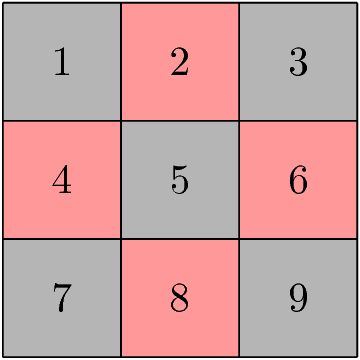
Figure 5: A 3×3 chessboard
| r | b | ||
|---|---|---|---|
| → | 1 | 2,4 | 5 |
| 2 | 4,6 | 1,3,5 | |
| 3 | 2,6 | 5 | |
| 4 | 2,8 | 1,5,7 | |
| 5 | 2,4,6,8 | 1,3,7,9 | |
| 6 | 2,8 | 3,5,9 | |
| 7 | 4,8 | 5 | |
| 8 | 4,6 | 5,7,9 | |
| * | 9 | 6,8 | 5 |
The string rbb is accepted by this NFA.
Formal NFA
- A finite set of states, typically Q.
- An input alphabet, typically Σ.
- A transition function, typically δ.
- A start state in Q, typically q0.
- A set of final states F ⊂ Q.
Transition Function of an NFA
- δ(q, ε) is a set of states.
- Extend to strings as follows:
- Basis: δ(q, ε) = {q}
- Induction: δ(q, wa) = the union over all states p in δ(q, w) of δ(p, a)
Language of an NFA
- A string w is accepted by an NFA if δ(q0, w) contains at least one final state.
- The language of the NFA is the set of strings it accepts.
Example: Language of an NFA
- For our chessboard NFA, we saw that rbb is accepted.
- If the input consists of only b’s, the set of accessible states alternates between {5} and {1,3,7,9}, so only even-length, nonempty strings of b’s are accepted.
- What about strings with at least one r?
- The nonempty strings containing even number of b’s and not ending with r are accepted.
Equivalence of DFAs, NFAs
- A DFA can be turned into an NFA that accepts the same language.
- If δD(q, a) = p, let the NFA have δN(q, a) = {p}.
- Then the NFA is always in a set containing exactly one state—the state the DFA is in after reading the same input.
- Surprisingly, for any NFA there is a DFA that accepts the same languages.
- Proof is the subset construction.
- The number of states of the DFA can be exponential in the number of states of the NFA.
- Thus, NFAs accept exactly the regular languages.
Subset Construction
- Given an NFA with states Q, inputs Σ, transition function δN,
start state q0, and final states F, construct equivalent DFA with:
- States 2Q (Set of subsets of Q).
- Inputs Σ.
- Start state {q0}.
- Final states = all those with a member of F.
- The transition function δD is defined by:
- δD({q1, …, qk}, a) is the union over all i = 1, …, k of δN(qi, a).
- Example: We’ll construct the DFA equivalent of our “chessboard” NFA.
| r | b | ||
|---|---|---|---|
| → | {1} | {2,4} | {5} |
| {2,4} | {2,4,6,8} | {1,3,5,7} | |
| {5} | {2,4,6,8} | {1,3,7,9} | |
| {2,4,6,8} | {2,4,6,8} | {1,3,5,7,9} | |
| {1,3,5,7} | {2,4,6,8} | {1,3,5,7,9} | |
| * | {1,3,7,9} | {2,4,6,8} | {5} |
| * | {1,3,5,7,9} | {2,4,6,8} | {1,3,5,7,9} |
Proof of Equivalence: Subset Construction
- The proof is almost a pun.
- Show by induction on |w| that
- δN(q0, w) = δD({q0}, w)
- Basis: w = ε: δN(q0, ε) = δD({q0}, ε) = {q0}.
- Induction:
- Assume IH for strings shorter than w.
- Let w = xa, IH holds for x.
- Let δN(q0, x) = δD({q0}, x) = S.
- Let T = the union over all states p in S of δN(p, a).
- Then δN(q0, w) = δD({q0}, w) = T.
NFAs With ε-Transitions
- We can allow state-to-state transitions on ε input.
- These transitions are done spontaneously, without looking at the input string.
- A convenience at times, but still only regular languages are accepted.
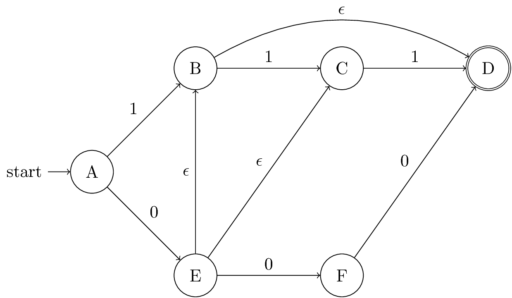
| 0 | 1 | ε | ||
|---|---|---|---|---|
| → | A | {E} | {B} | ∅ |
| B | ∅ | {C} | {D} | |
| C | ∅ | {D} | ∅ | |
| * | D | ∅ | ∅ | ∅ |
| E | {F} | ∅ | {B,C} | |
| F | {D} | ∅ | ∅ |
Closure of States
- CL(q) = set of states you can reach from state q following only arcs labeled ε.
- Example: CL(A) = {A}, CL(E) = {B,C,D,E}.
- Closure of a set of states = union of the closure of each state.
Extended Delta \(\DeclareMathOperator{\cl}{CL}\)
- Intuition: \(\hat\delta(q, w)\) is the set of states you can reach from q following a path labeled w.
- Basis: \(\hat\delta(q, \epsilon) = \cl(q)\)
- Induction: \(\hat\delta(q, wa) = \bigcup_{p \in \hat\delta(q, w)} \cl(\delta(p, a))\)
Example: Extended Delta
- \(\hat\delta(A, \epsilon) = \cl(A) = \{A\}\)
- \(\hat\delta(A, 0) = \cl(\delta(A, 0)) = \cl(\{E\}) = \{B,C,D,E\}\)
- \(\hat\delta(A, 01) = \bigcup_{p \in \{B,C,D,E\}} \cl(\delta(p, 1)) = \{C,D\}\)
Language of an ε-NFA is the set of strings w such that \(\hat\delta(q_0, w)\) contains a final state.
Equivalence of NFA and ε-NFA \(\newcommand{\abs}[1]{\left\lvert #1 \right\rvert}\)
- Every NFA is an ε-NFA.
- It just has no transitions on ε.
- Converse requires us to take an ε-NFA and construct an NFA that accepts the same language.
- We do so by combining ε-transitions with the next transition on a real input.
- Start with an ε-NFA with states Q, inputs Σ, start state q0, final states F, and transition function δE.
- Construct an “ordinary” NFA with states Q, inputs Σ, start state q0, final states \(F'\), and transition function δN.
- Compute \(\delta_N(q, a)\) as follows:
- \(\delta_N(q, a) = \bigcup_{p \in \cl(q)} \delta_E(p, a)\)
- \(F' = \{q \mid \cl(q) \cap F \neq \varnothing\}\)
- Prove by induction on \(\abs{w}\) that
- \(\cl(\hat\delta_N(q_0, w)) = \hat\delta_E(q_0, w)\).
- Thus, the ε-NFA accepts w iff the “ordinary” NFA does.
Example: ε-NFA to NFA
| 0 | 1 | ||
|---|---|---|---|
| → | A | {E} | {B} |
| * | B | ∅ | {C} |
| C | ∅ | {D} | |
| * | D | ∅ | ∅ |
| * | E | {F} | {C,D} |
| F | {D} | ∅ |
Summary
- DFAs, NFAs, and ε-NFAs all accept exactly the same set of languages: the regular languages.
- The NFA types are easier to design and may have exponentially fewer states than a DFA.
- But only a DFA can be implemented! (quantum computer for NFAs?)
1.5 DONE Finite Automata Homework
Question 1-2
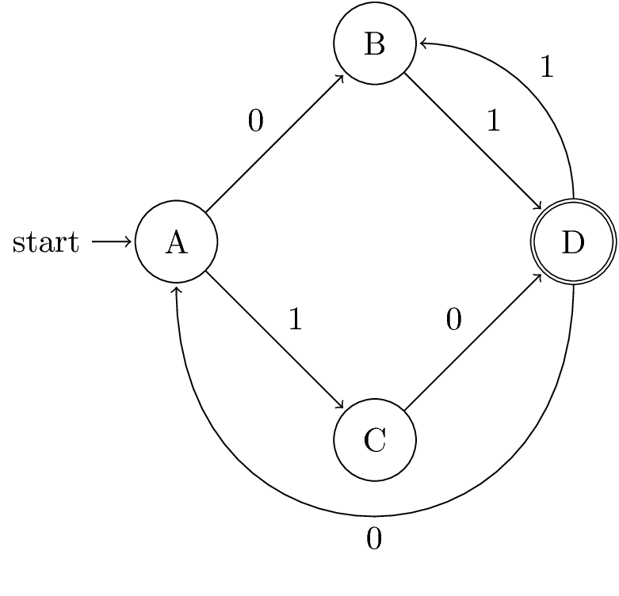
;; native implementation (defun N (k) (cond ((< k 2) 0) ((= k 2) 2) (t (+ (N (- k 2)) (* 2 (N (- k 3)))))))
Question 3
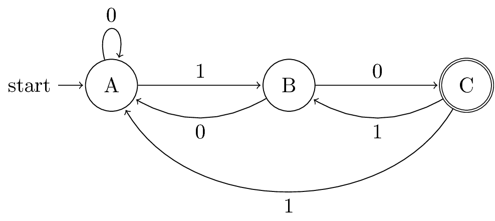
| 0 | 1 | ||
|---|---|---|---|
| → | {A} | {A} | {B} |
| {B} | {A,C} | ∅ | |
| * | {A,C} | {A} | {A,B} |
| {A,B} | {A,C} | {B} |
Question 4
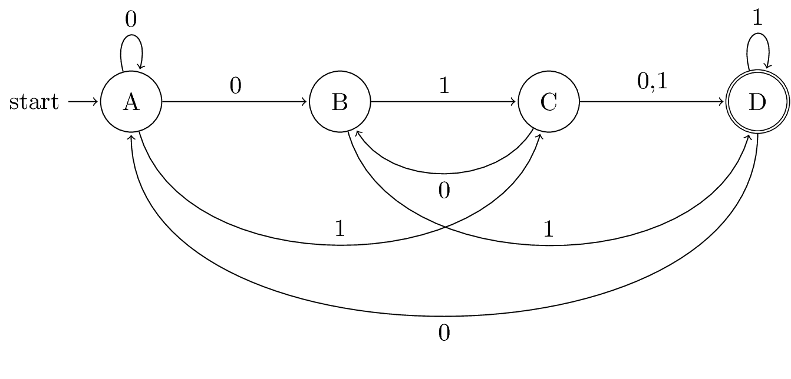
| 0 | 1 | ||
|---|---|---|---|
| → | {A} | {A,B} | {C} |
| {A,B} | {A,B} | {C,D} | |
| {C} | {B,D} | {D} | |
| * | {C,D} | {A,B,D} | {D} |
| * | {B,D} | {A} | {C,D} |
| * | {D} | {A} | {D} |
| {A,B,D} | {A,B} | {C,D} |
Question 5
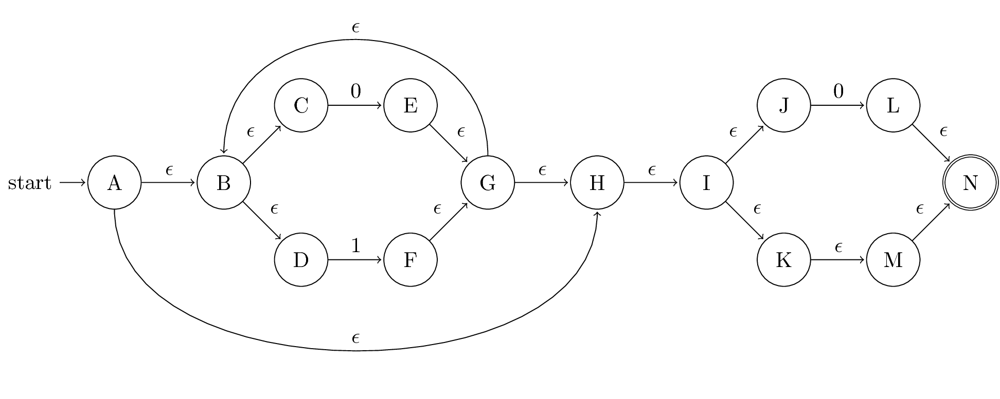
| 0 | 1 | ||
| →, * | {A} | {E,L} | {F} |
| * | {E,L} | {E,L} | {F} |
| * | {F} | {E,L} | {F} |
The above table is my original interpretation of construction from the lecture video. Judged by the given choices, the following table is what the question wants.
| 0 | 1 | ||
| →, * | {A,B,C,D,H,I,J,K,M,N} | {B,C,D,E,G,H,I,J,K,L,M,N} | {B,C,D,F,G,H,I,J,K,M,N} |
| * | {B,C,D,E,G,H,I,J,K,L,M,N} | {B,C,D,E,G,H,I,J,K,L,M,N} | {B,C,D,F,G,H,I,J,K,M,N} |
| * | {B,C,D,F,G,H,I,J,K,M,N} | {B,C,D,E,G,H,I,J,K,L,M,N} | {B,C,D,F,G,H,I,J,K,M,N} |
Question 6
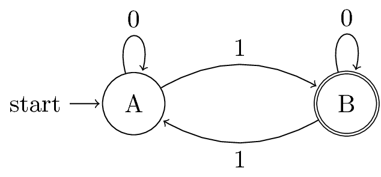
1.6 DONE Challenge Problem 1
Let L be the language with alphabet {0, 1, 2} consisting of strings that do not have any three consecutive 0s, any three consecutive 1s, or any three consecutive 2s. Prove that L is a regular language (hint: design automata or regular expressions for some simpler languages and then use closure properties of regular languages to get L). Harder is to design a DFA A for which the language is L itself, but we encourage you try to design one as a second part of this exercise.
To prove \(L\) is a regular language, we just need to construct a DFA and prove the language of this DFA is equivalent to \(L\). The following DFA is constructed for this purpose.
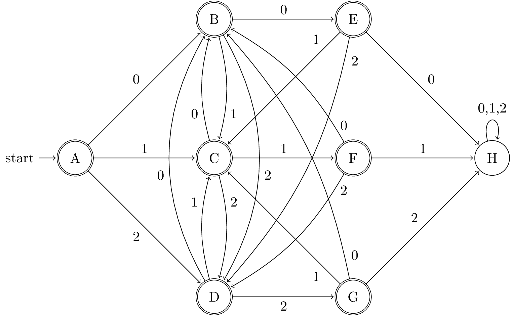
Inductive Hypotheses:
- If \(\hat\delta(A, w) = A\), then \(w \in L\) and \(w = \epsilon\).
- If \(\hat\delta(A, w) = B\), then \(w \in L\), \(w\) ends in \(0\), and the second last symbol in \(w\), if it has one, is not \(0\).
- If \(\hat\delta(A, w) = C\), then \(w \in L\), \(w\) ends in \(1\), and the second last symbol in \(w\), if it has one, is not \(1\).
- If \(\hat\delta(A, w) = D\), then \(w \in L\), \(w\) ends in \(2\), and the second last symbol in \(w\), if it has one, is not \(2\).
- If \(\hat\delta(A, w) = E\), then \(w \in L\) and \(w\) ends in \(00\).
- If \(\hat\delta(A, w) = F\), then \(w \in L\) and \(w\) ends in \(11\).
- If \(\hat\delta(A, w) = G\), then \(w \in L\) and \(w\) ends in \(22\).
Basis: \(\abs{w} = 0\), which means \(w = \epsilon\). IH1 clearly holds since \(\hat\delta(A, \epsilon) = A\) and \(\epsilon \in L\). All other IHs hold vacuously.
Induction: \(\abs{w} > 0\)
- Let \(w = xa\) and assume IHs hold for \(x\).
- \(\hat\delta(A, w) = \delta(\hat\delta(A, x), a) \neq A\), since \(\delta(q, a) \neq A\) for all \(q \in \Sigma\). And thus IH1 holds vacuously.
If \(\hat\delta(A, w) = \delta(\hat\delta(A, x), a) = B\), then \(\hat\delta(A, x) \in \{A,C,D,F,G\}\) and \(a = 0\).
- If \(\hat\delta(A, x) = A\), then \(x = \epsilon\). Therefore, \(w = \epsilon 0 = 0\) and \(w \in L\).
- If \(\hat\delta(A, x) = C\), then \(x \in L\), and \(x\) ends in \(1\). Let \(x = y1\), then \(w = y10\). It follows that \(w \in L\), \(w\) ends in \(0\), and the second last symbol in \(w\), if it has one, is not \(0\).
- Do the same thing for \(\hat\delta(A, x) = D\) as above.
- If \(\hat\delta(A, x) = F\), then \(x \in L\), and \(x\) ends in \(11\). Let \(x = y11\), then \(w = y110\). It follows that \(w \in L\), \(w\) ends in \(0\), and the second last symbol in \(w\), if it has one, is not \(0\).
- Do the same thing for \(\hat\delta(A, x) = G\) as above.
Thus, IH2 holds.
- Do the same thing for IH3 through IH7.
- All our IHs hold for \(w\).
Our IHs hold for all \(w\), which is the same thing to say that every \(w\) accepted by this DFA is in the language \(L\).
To prove the other direction, we take the contrapositive.
If \(w\) is not accepted by this DFA, then \(\hat\delta(A, w) = H\) and \(\abs{w} > 2\). Let \(w = xabc\).
- \(\hat\delta(A, w) = \delta(\hat\delta(A, xab), c) = H\)
- \(\hat\delta(A, xab) \in \{E,F,G\}\)
- If \(\hat\delta(A, xab) = E\), then \(c = a = b = 0\). Thus, \(w = x000\) and \(w \notin L\).
- Do the same thing for \(F\) and \(G\).
- Therefore, \(w \notin L\).
Hence, every string in the language \(L\) is accepted by this DFA.
1.7 DONE Problem Session 1
2 IN-PROGRESS Regular Expressions and Properties of Regular Languages
2.1 DONE Regular expressions
REs: Introduction
- Regular expressions describe languages by an algebra.
- They describe exactly the regular languages.
- If E is a regular expression, then L(E) is the language it defines.
- We’ll describe REs and their languages recursively.
Operations on Languages
- REs use three operations: union, concatenation, and Kleene star.
- The union of languages is the usual thing, since languages are
sets.
- Example: \(\{01, 111, 10\} \cup \{00, 01\} = \{01, 111, 10, 00\}\).
- The concatenation of languages L and M is denoted LM. It
contains every string wx such that w is in L and x is in M.
- Example: \(\{01, 111, 10\}\{00, 01\} = \{0100, 0101, 11100, 11101, 1000, 1001\}\)
- If L is a language, then L*, the Kleene star, or just star, is
the set of strings formed by concatenating zero or more strings
from L, in any order.
- \(L^* = \{\epsilon\} \cup L \cup LL \cup LLL \cup \dotsb\)
- Example: \(\{0, 10\}^* = \{\epsilon, 0, 10, 00, 010, 100, 1010, \dotsc\}\)
REs: Definition
- Basis 1: If \(a\) is any symbol, then \(\mathbf{a}\) is a RE, and
\(L(\mathbf{a}) = \{a\}\).
- Note: \(\{a\}\) is the language containing one string, and that string is of length 1.
- Basis 2: \(\epsilon\) is a RE, and \(L(\epsilon) = \{\epsilon\}\).
- Basis 3: \(\varnothing\) is a RE, and \(L(\varnothing) = \varnothing\).
- Induction 1: If \(E_1\) and \(E_2\) are regular expressions, then \(E_1 + E_2\) is a regular expression, and \(L(E_1+E_2) = L(E_1) \cup L(E_2)\).
- Induction 2: If \(E_1\) and \(E_2\) are regular expressions, then \(E_1 E_2\) is a regular expression, and \(L(E_1 E_2) = L(E_1) L(E_2)\)
- Induction 3: If \(E\) is a RE, then \(E^*\) is a RE, and \(L(E^*) = L(E)^*\).
Precedence of Operators
- Parentheses may be used wherever needed to influence the grouping of operators.
- Order of precedence is \(*\) (highest), then concatenation, then \(+\) (lowest).
Examples: REs
- \(L(\mathbf{01}) = \{01\}\).
- \(L(\mathbf{01}+\mathbf{0}) = \{01, 0\}\).
- \(L(\mathbf{0}(\mathbf{1}+\mathbf{0})) = \{01, 00\}\).
- Note order of precedence of operators.
- \(L(\mathbf{0}^*) = \{\epsilon, 0, 00, 000, \dotsc\}\).
- \(L((\mathbf{0}+\mathbf{10})^*(\epsilon+\mathbf{1})) =\) all strings of 0s and 1s without two consecutive 1s.
Equivalence of REs and Finite Automata
- We need to show that for every RE, there is a finite automaton that
accepts the same language.
- Pick the most powerful automaton type: the ε-NFA.
- And we need to show that for every finite automaton, there is a RE
defining its language.
- Pick the most restrictive type: the DFA.
Converting a RE to an ε-NFA
- Proof is an induction on the number of operator (+, concatenation, *) in the RE.
- We always construct an automaton of a special form.
Form of ε-NFAs Constructed
- “Start” state: Only state with external predecessors
- “Final” state: Only state with external successors
RE to ε-NFA: Basis
Symbol \(\mathbf{a}\):
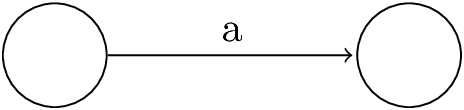
\(\epsilon\):
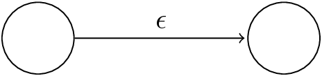
\(\varnothing\):
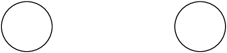
RE to ε-NFA: Induction 1—Union
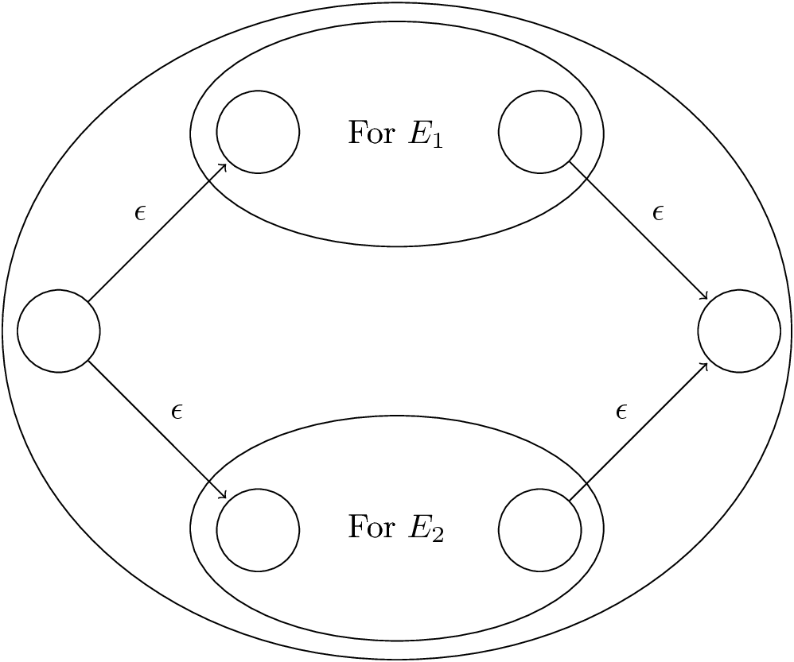
Figure 16: For \(E_1 + E_2\)
RE to ε-NFA: Induction 2—Concatenation
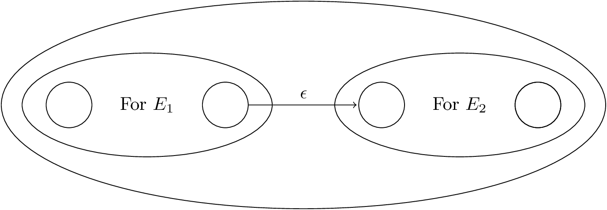
Figure 17: For \(E_1 E_2\)
RE to ε-NFA: Induction 3—Closure
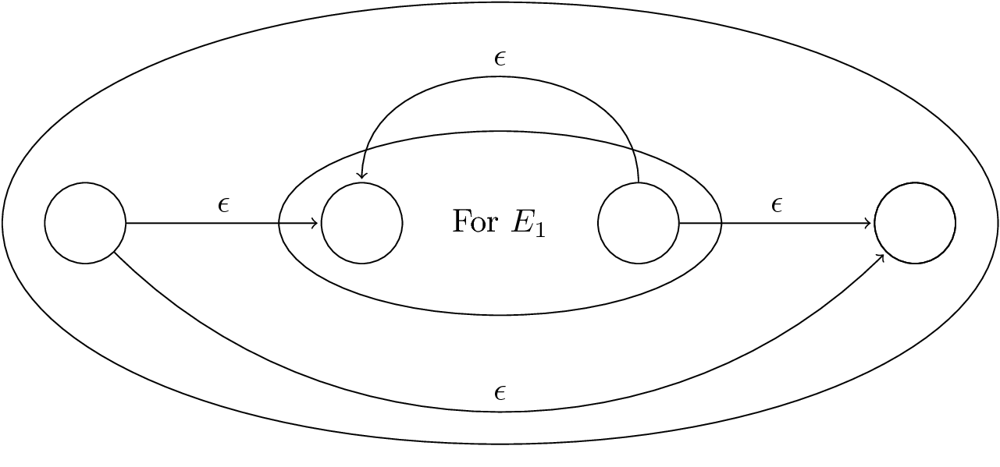
Figure 18: For \(E^*\)
DFA to RE
- A strange sort of induction
- States of the DFA are named 1, 2, …, n.
- Induction is on k, the maximum state number we are allowed to traverse along a path.
k-Paths
- A k-path is a path through the graph of the DFA that goes through no state numbered higher than k.
- Endpoints are not restricted; they can be any state.
- n-paths are unrestricted.
- RE is the union of REs for the n-paths from the start state to each final state.
Basis: \(k = 0\); only arcs or a node by itself.
Induction: construct REs for paths allowed to pass through state \(k\) from paths allowed only up to \(k-1\).
k-Path Induction
- Let \(R_{ij}^k\) be the regular expression for the set of labels of k-paths from state \(i\) to state \(j\).
- Basis: \(k = 0\). \(R_{ij}^0 =\) sum of labels of arc from i to j.
- \(\varnothing\) if no such arc.
- But add \(\epsilon\) if \(i = j\).
- Induction:
- A k-path from \(i\) to \(j\) either:
- Never goes through state \(k\), or
- Goes through \(k\) one or more times.
- \(R_{ij}^k = R_{ij}^{k-1} + R_{ik}^{k-1}(R_{kk}^{k-1})^*R_{kj}^{k-1}\).
- A k-path from \(i\) to \(j\) either:
- Final Step
- The RE with the same language as the DFA is the sum (union) of
\(R_{ij}^n\), where:
- \(n\) is the number of states; i.e., paths are unconstrained.
- \(i\) is the start state.
- \(j\) is one of the final states.
- The RE with the same language as the DFA is the sum (union) of
\(R_{ij}^n\), where:
Summary
- Each of the three types of automata (DFA, NFA, ε-NFA) we discussed, and regular expressions as well, define exactly the same set of languages: the regular languages.
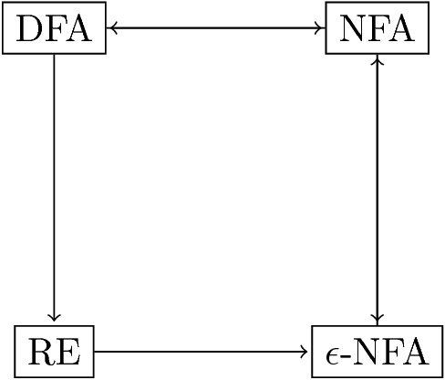
Algebraic Laws for REs
- Union and concatenation behave sort of like addition and
multiplication.
- + is commutative and associative; concatenation is associative.
- Concatenation distributes over +.
- Exception: Concatenation is not commutative.
Identities and Annihilators
- \(\varnothing\) is the identity for \(+\).
- \(\epsilon\) is the identity for concatenation.
- \(\varnothing\) is the annihilator for concatenation.
- \(\varnothing R = R \varnothing = \varnothing\).
2.2 DONE Regular expressions in the real world
Applications of Regular Expressions
- Unix REs
- Text processing
- Lexical analysis
Some Applications
- REs appear in many systems, often private software that needs a simple language to describe sequences of events.
- We’ll use Junglee as an example, then talk about text processing and lexical analysis.
RE-Based Software Architecture
- Junglee used a common form of architecture:
- Use REs plus actions (arbitrary code) as your input language.
- Compile into a DFA or simulated NFA.
- Each accepting state is associated with an action, which is executed when that state is entered.
UNIX Regular Expressions
- UNIX, from the beginning, used regular expressions in many places,
including the “grep” command.
- Grep = “Global (search for a) Regular Expression and Print.”
g/re/p
- Grep = “Global (search for a) Regular Expression and Print.”
- Most UNIX commands use an extended RE notation that still defines only regular languages.
UNIX RE Notation
- \([a_1 a_2 \dotsm a_n]\) is shorthand for \(a_1 + a_2 + \dotsb + a_n\).
- Ranges indicated by first-dash-last and brackets.
- Order is ASCII.
- Examples:
[a-z]= “any lowercase letter,”[a-zA-Z]= “any letter.”
- Dot = “any character.”
|is used for union instead of+.- But
+has a meaning: “one or more of.”E+=EE*.- Example:
[a-z]+= “one or more lowercase letters.”
?= “zero or one of.”E?=E + ε.- Example:
[ab]?=a+b+ε= “an optional a or b.”
Example: Text Processing
- Remember our DFA for recognizing strings that end in “ing”?
- It was rather tricking.
- But the RE for such strings is easy:
.*ingwhere the dot is the UNIX “any.” - Even an NFA is easy.
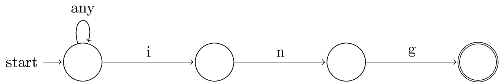
Figure 20: NFA for strings ending in “ing”
Lexical Analysis
- The first thing a compiler does is break a program into tokens (=
substrings) that together represent a unit.
- Examples: identifiers, reserved words like
if, meaningful single characters like;or+, multicharacter operators like<=.
- Examples: identifiers, reserved words like
- Using a tool like Lex or Flex, one can write a regular expression for each different kind of token.
- Example: in UNIX notation, identifiers are something like
[A-Za-z][A-Za-z0-9_]*. - Each RE has an associated action.
- Example: return a code for the token found.
Tricks for Combining Tokens
- There are some ambiguities that need to be resolved as we convert REs to a DFA.
- Examples:
iflooks like an identifier, but it is a reserved word.<might be a comparison operator, but if followed by=, then the token is<=.
- Convert the RE for each token to an ε-NFA.
- Each has its own final state.
- Combine these all by introducing a new start state with ε-transitions to the start states of each ε-NFA.
- Then convert to a DFA.
- If a DFA state has several final states among its members, give them priority.
- Example: Give all reserved words priority over identifiers, so if
the DFA arrives at a state that contains final states for the
ifε-NFA as well as for the identifier ε-NFA, it declaresif, not identifier. - It’s a bit more complicated, because the DFA has to have an additional power.
- It must be able to read an input symbol and then, when it accepts, put that symbol back on the input to be read later.
Example: Put-Back
- Suppose
<is the first input symbol. - Read the next input symbol.
- If it is
=, accept and declare the token is<=. - If it is anything else, put it back and declare the token is
<.
- If it is
- Suppose
ifhas been read from the input. - Read the next input symbol.
- If it is a letter or digit, continue processing.
- You did not have reserved word
if; you are working on an identifier.
- You did not have reserved word
- Otherwise, put it back and declare the token is
if.
- If it is a letter or digit, continue processing.